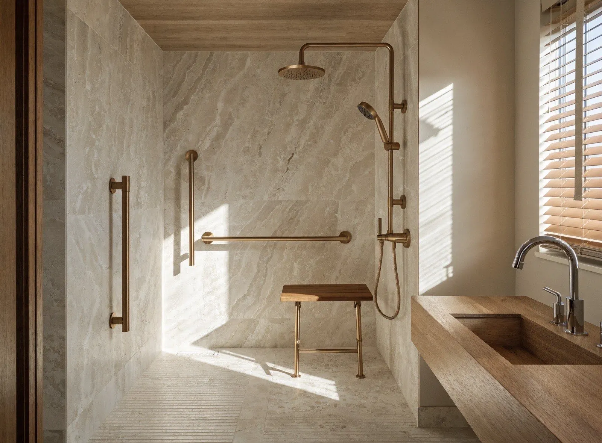
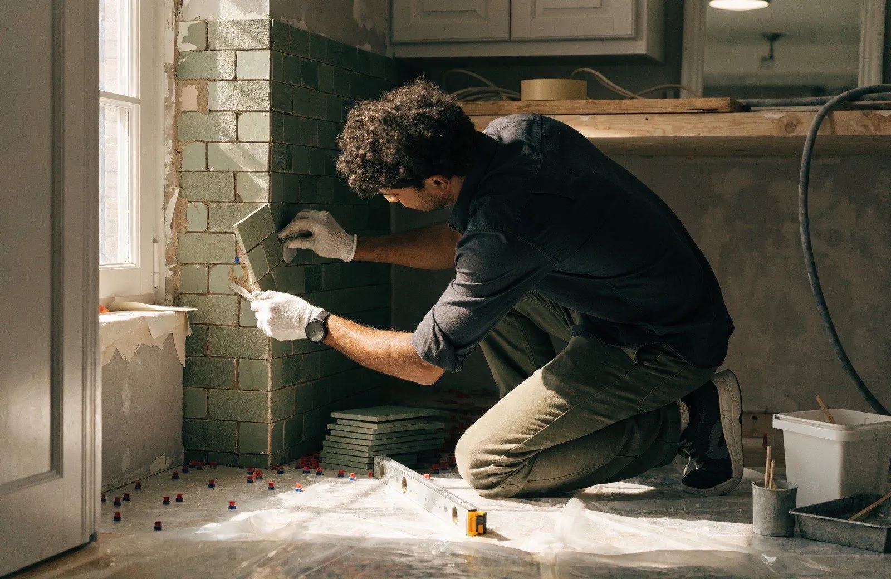

Salle de bain senior & PMR : la sécurité, sans renoncer au style
Douche de plain-pied, sol antidérapant, barres d'appui élégantes : nous adaptons votre salle de bain — ou celle de vos parents — pour vivre chez soi longtemps, sereinement. Et nous montons avec vous le dossier MaPrimeAdapt', qui peut financer jusqu'à 70 % des travaux.

La salle de bain, première cause de chute à domicile
Sol mouillé, rebord de baignoire à enjamber, rien pour se retenir : la salle de bain concentre à elle seule près de la moitié des chutes domestiques des plus de 65 ans. Et une chute, c'est souvent le début d'une perte d'autonomie qui aurait pu être évitée.
La bonne nouvelle : quelques jours de travaux suffisent à transformer cette pièce à risque en un espace sûr et confortable, et à rester chez soi, dans son quartier, auprès de ses habitudes. C'est le sens du maintien à domicile — et c'est très souvent un enfant qui fait la démarche pour son parent. Si c'est votre cas, nous nous adaptons : visite en votre présence, compte-rendu téléphonique, photos à chaque étape.
- Remplacement de la baignoire par une douche sécurisée en quelques jours
- Équipes patientes, respectueuses du domicile et des habitudes
- Accompagnement complet du dossier MaPrimeAdapt'
- Garantie décennale sur l'étanchéité et la plomberie
La sécurité, sans l'esthétique hôpital
Une salle de bain adaptée n'a aucune raison de ressembler à une chambre médicalisée. Nous choisissons des équipements sûrs et beaux : barres d'appui finition laiton ou noir mat, receveurs effet pierre, parois vitrées épurées.
Douche de plain-pied
Receveur extra-plat ou douche à l'italienne : plus aucune marche à franchir, on entre et on sort de la douche comme dans une pièce.
Sol antidérapant
Carrelage classé antidérapant (norme PN/PC) au sol et dans la douche : une adhérence fiable, pieds nus et sol mouillé compris.
Barres d'appui design
Barres de maintien élégantes, finition laiton brossé ou noir mat, fixées dans la structure du mur : discrètes mais infaillibles.
Siège de douche rabattable
Assise murale rabattable en teck ou composite : se doucher assis en tout confort, et un siège qui s'efface quand on n'en a pas besoin.
Mitigeur thermostatique
Température réglée une fois pour toutes, butée anti-brûlure : fini l'eau brûlante ou glacée, même si la pression varie.
Porte élargie
Passage de porte porté à 83 cm ou plus, ouverture vers l'extérieur ou coulissante : accessible avec une canne, un déambulateur ou un fauteuil.
Éclairage automatique
Détecteur de présence et veilleuse de cheminement : la lumière s'allume seule la nuit, sans chercher l'interrupteur à tâtons.
WC et vasque adaptés
WC rehaussé, vasque à hauteur ajustée et miroir inclinable si besoin : chaque détail pensé pour l'usage quotidien, sans effort.
MaPrimeAdapt' : jusqu'à 70 % des travaux financés
Adapter sa salle de bain coûte bien moins cher qu'on ne le croit, car l'État et les caisses de retraite financent une grande partie des travaux. Nous vous aidons à mobiliser chaque dispositif et nous montons le dossier avec vous, de la demande au versement.
- MaPrimeAdapt' : jusqu'à 50 % ou 70 % du montant des travaux selon vos ressources, dans la limite de 22 000 € de travaux. Accessible dès 70 ans (ou dès 60 ans en perte d'autonomie précoce) et aux personnes en situation de handicap, sous conditions de ressources.
- Crédit d'impôt autonomie : 25 % des dépenses d'équipements d'accessibilité (dans les plafonds en vigueur) pour les foyers non éligibles à MaPrimeAdapt'.
- Caisses de retraite (Assurance retraite, Agirc-Arrco…) : aides « Bien vieillir chez soi » cumulables selon votre situation.
- Action Logement et aides locales (départements, CCAS) : dispositifs complémentaires pour salariés, retraités du privé et habitants du 93.
Lors de la visite gratuite, nous vérifions ensemble votre éligibilité, chiffrons le reste à charge réel et vous accompagnons dans les démarches administratives. Vous signez en connaissant le montant exact qu'il vous restera à payer.

Combien coûte une salle de bain senior en Île-de-France ?
Des fourchettes transparentes avant les aides — puis un devis ferme et un reste à charge précis après la visite gratuite.
| Prestation | Ce qui est inclus | Prix indicatif TTC |
|---|---|---|
| Douche sécurisée | Dépose de la baignoire, douche de plain-pied antidérapante, barres d'appui, siège rabattable, mitigeur thermostatique, paroi vitrée | 3 900 – 6 500 € |
| Salle de bain PMR complète | Douche sécurisée, WC rehaussé, vasque adaptée, sol antidérapant complet, porte élargie, éclairage automatique — clé en main | 6 500 – 10 000 € |
| Reste à charge après aides | Avec MaPrimeAdapt' à 70 % et les aides complémentaires, le reste à charge peut être réduit à une fraction du devis | Chiffré lors de la visite |
Fourchettes indicatives constatées sur nos chantiers en Seine-Saint-Denis, à Paris et en Île-de-France, fournitures et pose comprises. Le montant des aides dépend de l'âge, des ressources et du degré d'autonomie : nous calculons votre reste à charge exact avant tout engagement.
Une salle de bain sécurisée, sans bouleverser le quotidien
Visite & écoute
Un technicien se déplace gratuitement, en présence de la famille si vous le souhaitez : besoins, habitudes, mesures et étude des aides mobilisables.
Devis & dossier d'aides
Devis ferme sous 24h avec reste à charge estimé. Nous constituons avec vous le dossier MaPrimeAdapt' et attendons l'accord avant de commencer.
Travaux en douceur
4 à 8 jours de chantier protégé et nettoyé chaque soir, avec un point d'eau maintenu. Équipes discrètes, respectueuses du rythme de la maison.
Réception & prise en main
Réception ensemble, réglage du thermostatique, démonstration de chaque équipement. Nous restons joignables, y compris en urgence 24h/24.
Pour vous ou pour un parent : parlons-en simplement
Votre étude gratuite en 1 minute
Décrivez votre projet : un conseiller vous rappelle sous 2h ouvrées avec une première estimation.
Découvrez nos autres rénovations
La douche à l'italienne est souvent le cœur d'un projet d'adaptation, et certains préfèrent en profiter pour refaire toute la pièce :
Vos questions sur la salle de bain senior & PMR
Qui peut bénéficier de MaPrimeAdapt' et comment faire la demande ?
MaPrimeAdapt' s'adresse aux personnes de 70 ans et plus sans condition de perte d'autonomie, aux 60-69 ans en perte d'autonomie précoce (GIR 1 à 6) et aux personnes en situation de handicap, sous conditions de ressources. Elle finance 50 % ou 70 % du montant des travaux d'adaptation, dans la limite de 22 000 € de travaux. La demande se fait en ligne sur France Rénov', avant le début des travaux : nous préparons avec vous le devis conforme et les pièces du dossier, et nous attendons l'accord avant de commencer.
Combien de temps durent les travaux ?
Comptez 4 à 5 jours pour le remplacement d'une baignoire par une douche sécurisée, et 6 à 8 jours pour une salle de bain PMR complète (douche, WC, vasque, sol, porte). Le chantier est mené en continu, protégé et nettoyé chaque soir, pour perturber le quotidien le moins possible.
Peut-on continuer à se laver pendant les travaux ?
Oui, nous nous organisons pour cela : un point d'eau reste accessible en permanence, et la nouvelle douche est mise en service dès que l'étanchéité le permet, souvent avant la fin des finitions. Pour une personne âgée vivant seule, nous planifions les coupures d'eau à l'avance et les limitons à quelques heures.
Les barres d'appui sont-elles obligatoires ?
Rien n'est imposé dans un logement privé : nous recommandons les équipements réellement utiles à votre situation, sans en faire trop. Une ou deux barres bien placées (entrée de douche, à côté du WC) suffisent souvent. Et nos barres finition laiton brossé ou noir mat s'intègrent au décor : on les prend volontiers pour un porte-serviettes élégant.
Je fais la démarche pour un parent qui vit seul : comment ça se passe ?
C'est le cas de nombreux clients. Nous organisons la visite à un horaire où vous pouvez être présent, ou nous vous faisons un compte-rendu téléphonique détaillé avec photos. Devis, dossier d'aides et suivi de chantier peuvent être gérés avec vous à distance, pendant que nos équipes prennent soin de votre parent sur place : ponctualité, patience et explication de chaque équipement à la fin du chantier.
Je suis locataire : puis-je adapter ma salle de bain ?
Oui. La loi facilite les travaux d'adaptation du logement au vieillissement ou au handicap : ils sont réalisés aux frais du locataire avec l'accord du propriétaire, et l'absence de réponse du bailleur sous deux mois vaut acceptation pour les travaux d'adaptation listés par décret. MaPrimeAdapt' est d'ailleurs ouverte aux locataires du parc privé. Nous vous fournissons le descriptif des travaux à joindre à votre courrier.
Offrez-vous, ou offrez-leur, une salle de bain sereine
Étude gratuite à domicile, calcul des aides et devis ferme sous 24h. Pour vous ou pour un parent, tout commence par un simple appel.